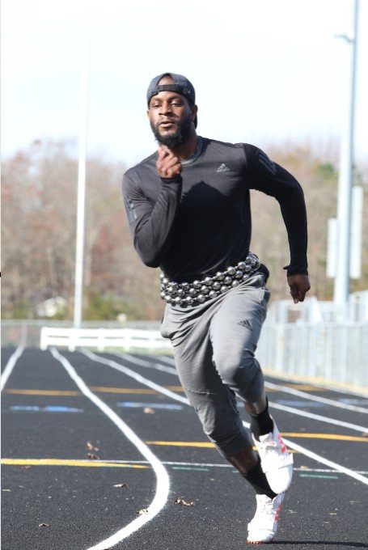

Built around the waist
The LasO is designed to remain securely looped around the body during movement.
Train from your center. Understand your movement. Build a clearer picture of what happens between every repetition.

Most systems record what you did.
We're building a better understanding of where the body spends its time, how it moves through positions, and what changes over time.
LasO began with one fundamental idea: reposition resistance around the body's center, without turning natural movement into another machine-bound exercise.
The LasO is designed to remain securely looped around the body during movement.
From running and cutting to controlled strength work, movement remains the focus.
Paired with movement observation, the system can support questions that ordinary rep counts overlook.
Center-of-gravity resistance training system
A repetition is only part of the picture. LasO's movement research explores how positions accumulate, when transitions occur, and how motion can be observed more meaningfully.

Explore how long a person occupies specific joint configurations—not just how many times they complete an exercise.
Video helps identify body landmarks, timing and visible movement patterns.
A coach can correct joints, label phases and explain details automated analysis may miss.
Coach review can help build better examples. Recording, research use and any future model training require separate permissions and evaluation.
We believe better measurement begins with knowing what is observed, what is inferred, and what remains unknown.
Time spent in similar joint configurations, repeated returns, and near-stationary intervals.
Movement velocity and timing, with quality checks for missing or uncertain video observations.
Planned research with inertial sensors, calibrated resistance sensing and additional camera perspectives.
Research design calls for separating original footage from derived annotations and checking participant permissions. These pages publish no client records or internal engine code.
A physical system, a coaching practice and a research platform serving distinct—but connected—needs.
Coached training for people who want strength, mobility, and consistent progress as part of life.
COACHINGMovement-focused strength and conditioning for cuts, sprints, throws and other sport-specific tasks.
TRAINING APPLICATIONSEarly collaboration around expert-verified movement data, positional exposure and future sensors.
PILOT & RESEARCH INQUIRIESReginald Gardiner developed LasO through 25+ years of coaching and training more than 1,500 people. Some client relationships extend 14+ years.
The mission connects a patented physical system with practical coaching insight and an evolving movement analysis platform—without confusing experimental measurements with established results.
Interested in the physical product, coaching, or early collaboration with our movement research platform?
No login is required for this overview. Pilot applications, research participation and recording are separate choices.